Префектура Хоккайдо · озеро Акан · праздник и обряд
Праздник маримо на озере Акан: как айны каждую осень возвращают озеру его зелёные шары

Каждый октябрь на озеро Акан съезжаются айны со всего Хоккайдо. Повод на первый взгляд скромный: несколько зелёных шаров из водорослей, которые здесь называют маримо. Но за этим праздником стоит одна из первых в Японии историй о том, как жители сами взялись спасать природу.
Осень
Акан в жёлтом и красном
Озеро Акан лежит на востоке Хоккайдо, и местные жители с гордостью говорят, что осенью оно особенно красиво. Если летом здесь всё синее от неба и леса, то в октябре берега заливает жёлтым и красным. Краски такие яркие, что слепят глаза, а безоблачное осеннее небо делает их ещё ярче.
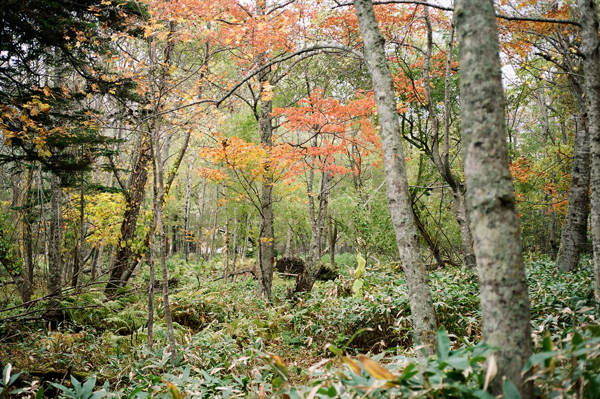
Стоит войти в лес у озера, и он оказывается совсем другим, чем летом. Осенью листья багрянника японского, кацуры, чуть сладко пахнут. Если наклониться к опавшей листве, под ней можно найти грецкие орехи. Сотрудник местного экоцентра рассказывает, что это любимое лакомство местной белки, и при удаче слышно, как она грызёт скорлупу. Туристов осенью меньше, чем летом, и тихий лес почти целиком достаётся вам одному.
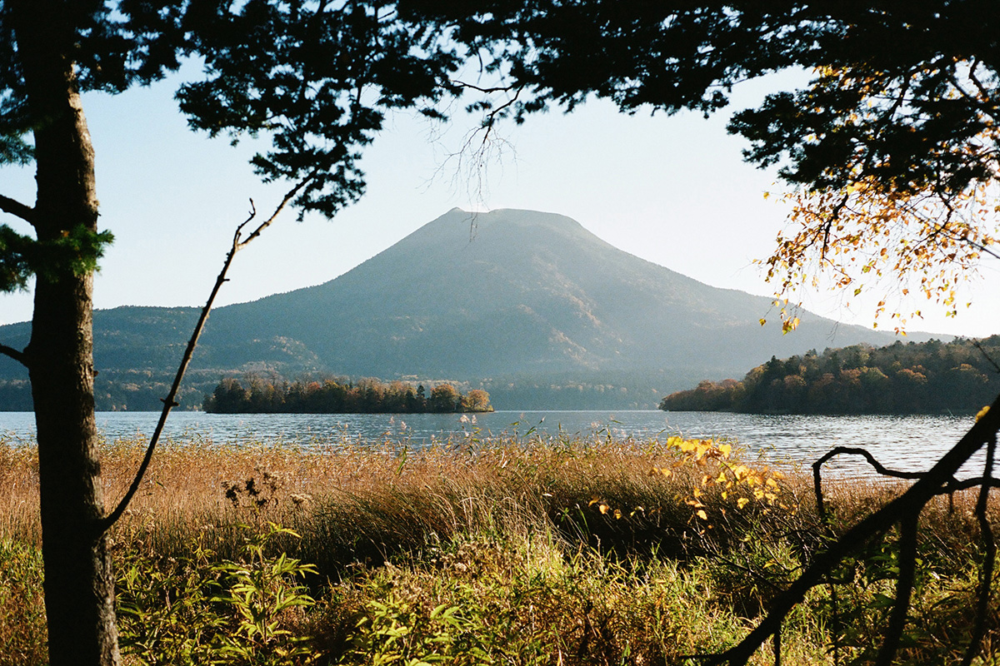
О природе Акана в разные времена года читайте в статье о природе озера.
Праздник
Маримо и праздник, которому больше 75 лет
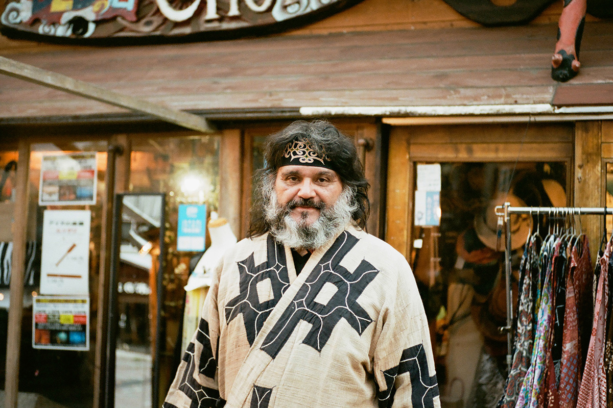
Главное осеннее событие посёлка Акан-ко онсэн это праздник маримо, который впервые прошёл в 1950 году. Для гостей здесь устраивают шествие с танцем маримо, проносят переносной алтарь с маримо, зажигают тысячу факелов. А рядом с этим шумным праздником идёт айнский обряд камуй-номи. Из-за коронавируса в 2020 и 2021 годах праздник сократили, а в 2021 году участники провели только камуй-номи.
Для Дэбо Акибэ, одного из главных людей айнской деревни Акан-ко, этот праздник прежде всего встреча.
«На праздник маримо съезжается до двухсот айнов со всего Хоккайдо. Здороваемся: живой, как ты? Видимся раз в год, поэтому этой встречи ждём весь год»
Дэбо Акибэ
Праздник поддерживал и возрождение айнской культуры.
«Раньше айны у себя дома пели и танцевали тайком. А на Акане можно было танцевать спокойно. Чтобы выступить на празднике маримо, по всему Хоккайдо стали восстанавливать айнские танцы. Движение, которое началось с этого праздника, было очень большим»
Дэбо Акибэ
Айны почитают камуй, богами для них становятся природа, звери и растения. Но сами маримо, по словам Дэбо Акибэ, особым божеством не были. Благодарят здесь среду, в которой маримо растут.
«Где могут жить маримо, сможет жить и человек. Маримо это барометр для природы»
Дэбо Акибэ
Сам праздник вырос из движения за возвращение маримо, которое поднялось на Акане в конце 1940-х годов. В 1897 году ботаник Такия Каваками (1871–1915) нашёл эти шарообразные водоросли в озере и дал им японское название «маримо», «водорослевый мяч». Потом маримо стали продавать как комнатную диковинку в Токио и других городах, и их вылавливали без меры. На реке, которая вытекает из озера, построили гидроэлектростанцию, и к концу 1940-х годов маримо оказались на грани исчезновения.
Тогда местные жители начали собирать маримо, проданные по всей стране, и возвращать их в озеро. Из этого движения и вырос первый праздник маримо в 1950 году. До бурного экономического роста Японии оставалось ещё несколько лет, охрана природы в стране только зарождалась, а на Акане жители уже сами защищали своё озеро.
Обряд
Камуй-номи: молитва, а не представление
С самого начала возвращение маримо в места, где они растут, проходило как камуй-номи, молитва богам. Айны проводят камуй-номи во многих случаях: например, перед тем как войти в лес, чтобы попросить о безопасности и поздороваться с лесом. В 2021 году праздник сократили, и камуй-номи провели только для своих в доме айнской культуры «Оннэ-тисэ».
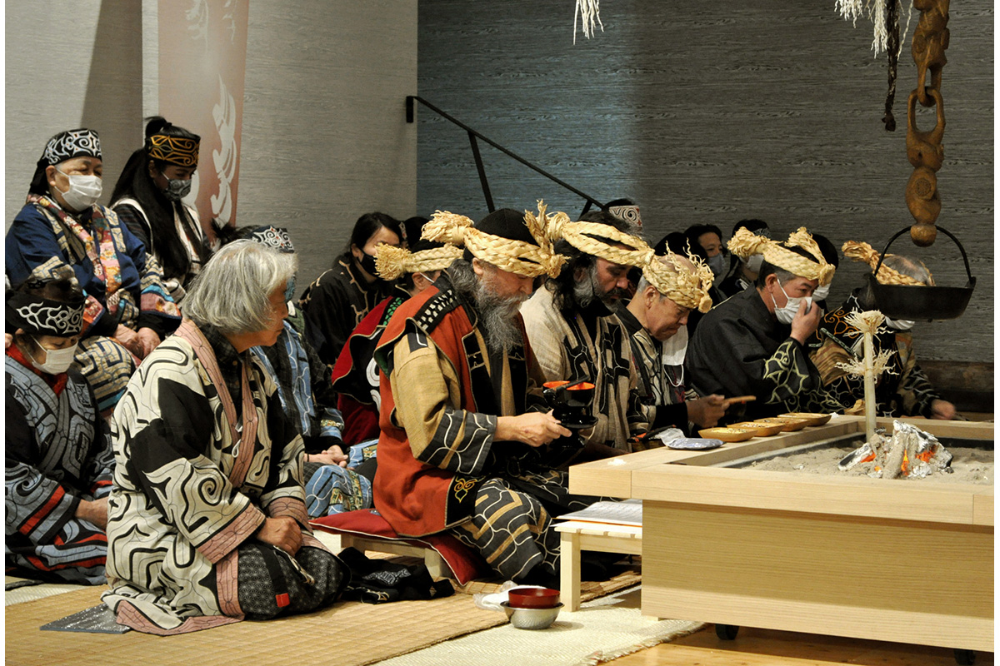
После молитвы женщины танцуют под открытым небом, перед нусасан, алтарём из ритуальных палочек инау. Этот танец не для туристов, он для камуй. В отличие от выступлений в театре «Икор», здесь всё похоже на настоящее подношение богам.
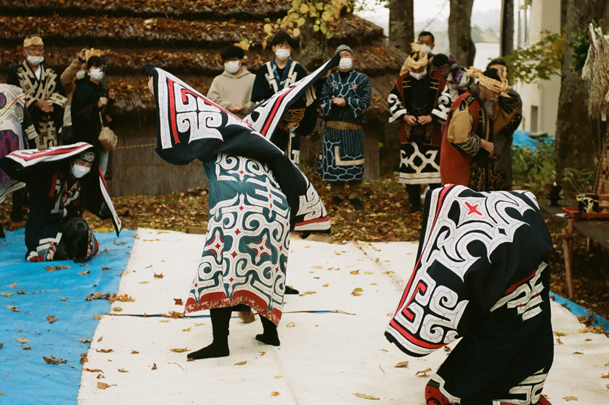
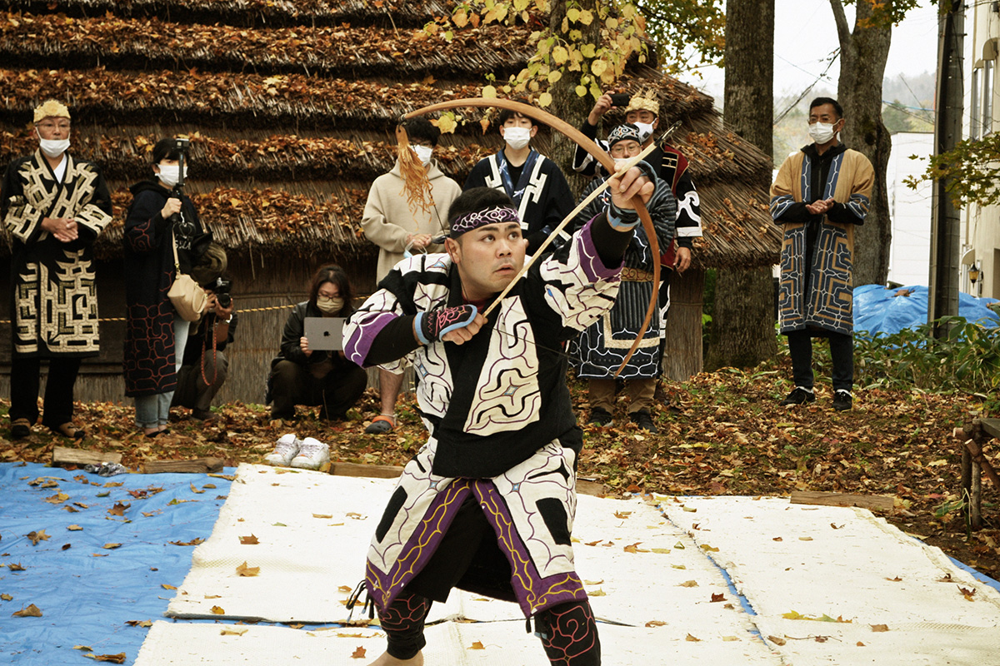
Затем на острове Тюруй посреди озера провели камуй-номи, чтобы проводить маримо. Маримо встречают и снова отпускают в озеро. Дух, который лежит в основе этого обряда, не изменился с 1950 года.
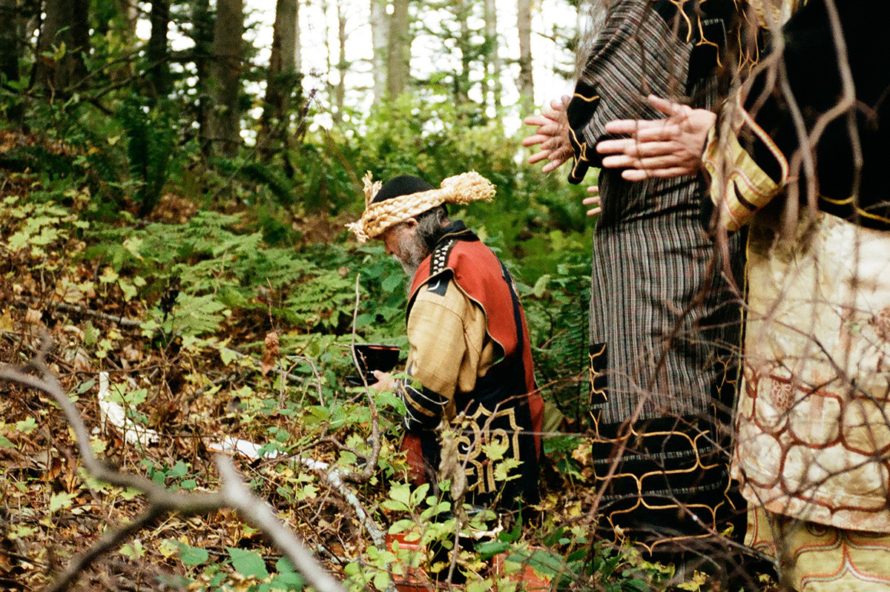
Айнская культура, конечно, не туристическое развлечение. Что значит жить вместе с природой? Как передавать культуру? Что значит жить на своей земле? После встречи с айнской культурой на Акане эти вопросы остаются с вами, и, пожалуй, это лучший сувенир из поездки. Дэбо Акибэ вспоминает слова старшего товарища, Сигэру Каяно (1926–2006). Каяно всю жизнь записывал и сохранял айнский язык и сказания и в 1994 году стал первым айном в парламенте Японии.
«Каяно говорил: айны живут на проценты от природы, а основной капитал не трогают. Тогда получается круговорот, и жить так можно вечно. Пришло время пересмотреть и промышленность, и капитализм, и думать, куда мы правим. Все заговорили об устойчивом развитии. Ну наконец-то дошло (смеётся)»
Дэбо Акибэ
В октябре над Аканом кружатся снежные мушки, крошечные насекомые из семейства тлей. Говорят, они появляются перед самым снегом. В ноябре на озеро ложится первый снег, и скоро всё вокруг становится белым.
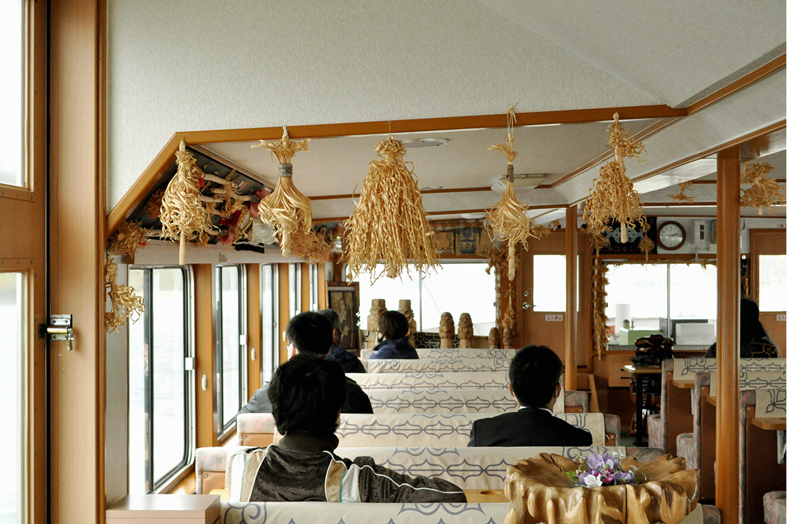
Праздник маримо проходит каждый год в октябре. В 2026 году его назначили на 8–10 октября. Главные моменты: обряд встречи маримо, факельное шествие, айнские танцы и обряд проводов, когда маримо на долблёной лодке везут к озеру и возвращают в воду. Об айнской деревне Акан-ко, её мастерских и театре «Икор» читайте в статье об айнской деревне.
Праздник маримо
- Адрес
- префектура Хоккайдо, Кусиро, Акан-тё, Акан-ко онсэн, берег озера Акан
- Даты
- ежегодно в октябре (в 2026 году 8–10 октября)
- Цены / Вход
- бесплатно
- Телефон
- +81 154-67-3200 (Ассоциация туризма Акана)
Книга
«Молитва айнов»: Хоккайдо глазами Акихико Хориути
В 2020 году в Сираое открылся Упопой, национальный центр айнской культуры, и при нём первый в стране государственный музей айнов (о нём отдельная статья). Тогда же тираж манги «Золотой камуй», где одна из главных героинь айнская девочка, перевалил за 10 млн экземпляров, а по манге сняли аниме. Айны и коренные народы привлекли внимание всего мира.
К открытию Упопоя вышла фотокнига «Молитва айнов. Камуй-номи». Фотограф Акихико Хориути объездил весь Хоккайдо при поддержке тех, кто хранит айнскую культуру в разных частях острова, и снимал, как люди среди дикой природы молятся и танцуют для камуй. Книга показывает айнскую культуру живой, такой, какой её берегут сегодня.
Один из разделов книги посвящён упопо и римсэ, айнским песням и танцам.
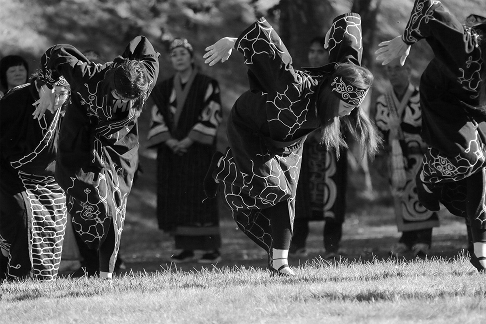
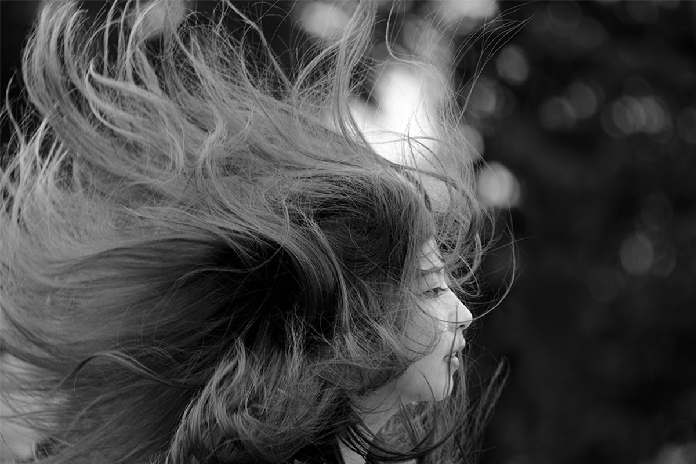
Есть в книге и звуки, и пейзажи: варган муккури над водой, тихие озёра востока Хоккайдо.
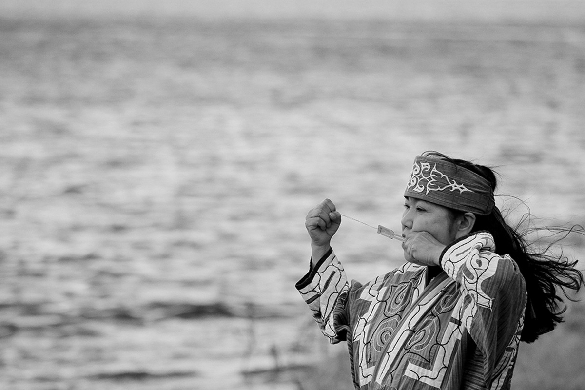
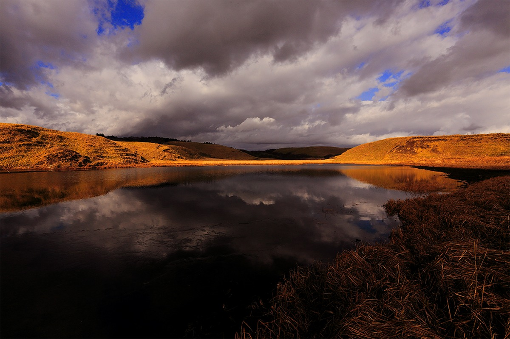
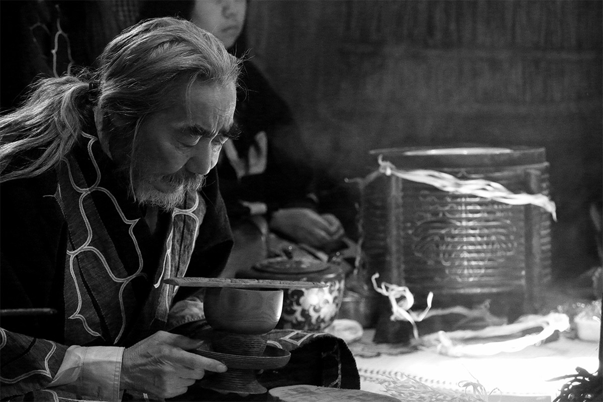
Фотокнига «Молитва айнов. Камуй-номи»
- Цены / Вход
- 3 300 иен с налогом (2020 год)
- Сайт
- kyuryudo.co.jp
Книга вышла в издательстве «Кюрюдо» в 2020 году: 144 страницы, из них 120 напечатаны в два тона.
Фото: Юка Судзуки, Акихико Хориути.